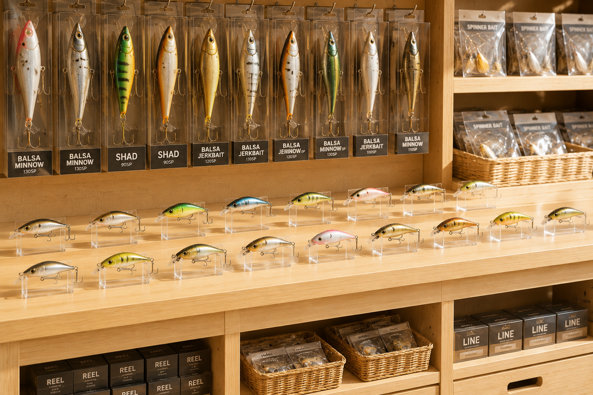

家事や育児の合間に、
身近な店舗でお買い物代行。
滋賀県守山市周辺 限定募集

「完全自由シフト」だから、お子様の習い事やピアノ教室の合間、 日々のスキマ時間だけで、ご自身のペースに合わせて しっかり確実にお仕事が可能です。
お仕事の3大メリット
1店舗まわるごとに 1,000円支給
短時間の簡単な確認と商品の調達だけで、 効率よく高待遇の報酬を得ることができます。
出費ゼロ＋倉庫・発送作業は時給1,200円
移動にかかるガソリン代は全額支給のため、 自己負担はありません。
さらに、年内開設予定の新拠点での検品・梱包から 郵便局への発送（持ち込み）までは 時給1,200円を支給。
倉庫の入室ログと郵便局のレシート時間をもとに計算するため、 移動や窓口での待ち時間も含めて支払われます。
体力的負担なし。超軽量商品のみ
扱う商品はルアーなどの手のひらサイズ。 重いダンボールを何箱も運ぶような 力仕事・重労働は一切ありません。
具体的なお仕事の流れ
特別な専門知識や釣具の経験は必要ありません。 スマートフォンに届く指示通りに動くだけの、 シンプルな「お買い物代行」です。
- 指定された店舗（滋賀県内）へ行く
- 指定された商品を購入する ※購入資金は全額先払い
- 購入した商品を指定の場所へ届ける （倉庫）
- 倉庫で検品・梱包
- 郵便局で発送（送り状作成不要）
商品の購入個数ではなく、 移動した店舗数（1店舗＝1,000円）に応じて 対価が支払われます。
対象エリア
琵琶湖周辺が中心となります。 ご自宅から車で20〜30分以内で移動できる方を歓迎します。
上記地域にお住まいで、 自家用車で移動できる方であれば応募可能です。
求める人物像
- 日常的に自家用車（軽自動車・普通車）を運転できる方
- スマートフォンでの写真撮影、 連絡用アプリの基本操作ができる方
- 迅速な返信・自己管理・責任感・ きめ細やかな報告を大切にできる方
最初のメッセージへの返信速度や丁寧さも、 お仕事をお願いする際の大切な判断材料としています。
安心の運営体制と今後の予定
現在はスタッフの皆様のご自宅での作業 （検品・保管）がメインとなりますが、 業務拡大に伴い 年内には滋賀県内に専用の作業場・配送拠点を完成予定 です。
海外からシステムを介したリアルタイムの施錠・ 入退室ログ管理、および電話確認を行い、 シンプルで管理しやすい運営体制を整えています。
主婦の方々にアピールしたいポイント
- 【釣具の知識ゼロでも安心！スマホの写真通りに探すだけ】
- 【自由シフトで月2〜6万円＋発送手当、扶養控除内の調整もかんたん】
- 【投稿ゼロの「見る専用アカウント」から「求人を見ました」とDMするだけで応募完了！】
- 【スキマ時間だけの勤務なので、扶養控除内におさめて賢く稼げます】
ご家族の緊急の用事、お子様の用事、ご自身の健康を最優先いたします。時間や日程の拘束は一切いたしません。全て相談連絡を基本としたお仕事の進め方です。
代表プロフィール
滋賀県を拠点に、海外市場向けのデザイン・ 国際物流・貿易事業を展開。
スタッフの皆様が余計な人間関係や 物理的リスクに縛られず、 個人のライフスタイルに合わせて 効率よく働ける仕組みを重視しています。
年内に守山市周辺に新拠点を設立予定です。